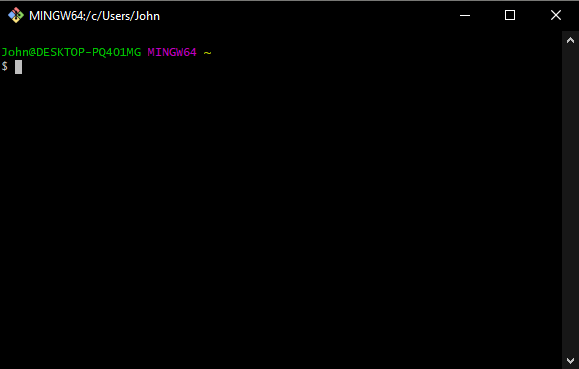
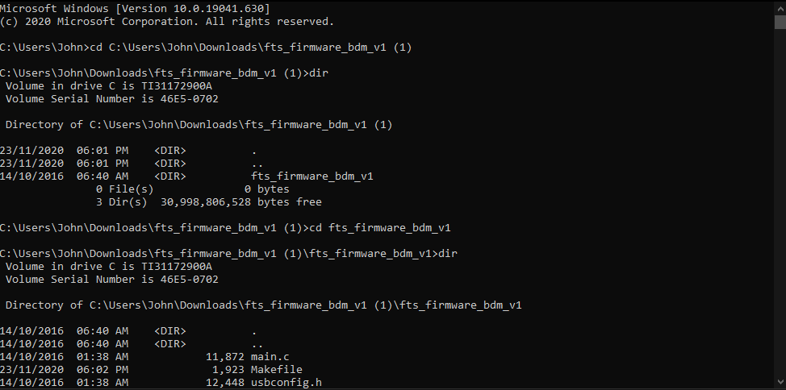
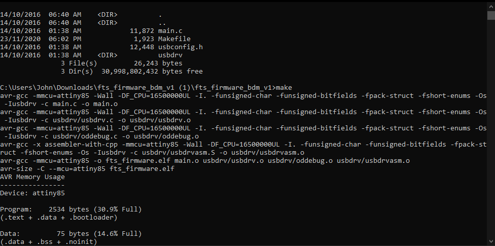
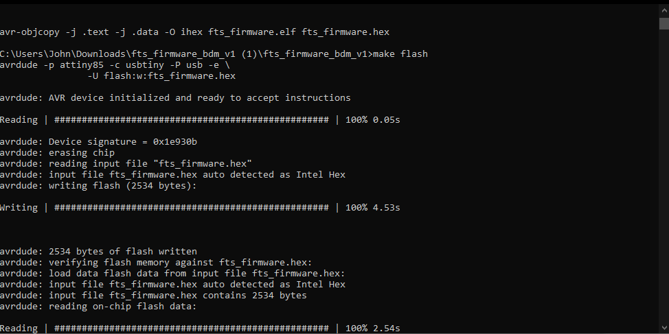
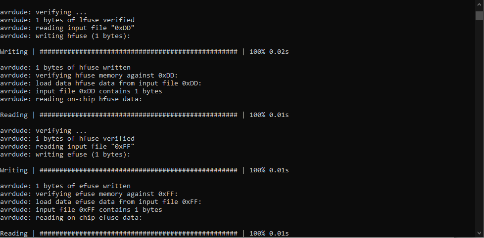
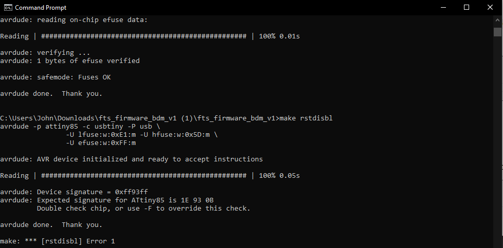
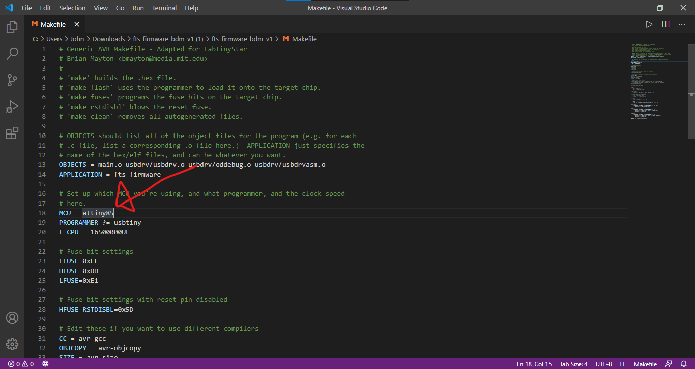
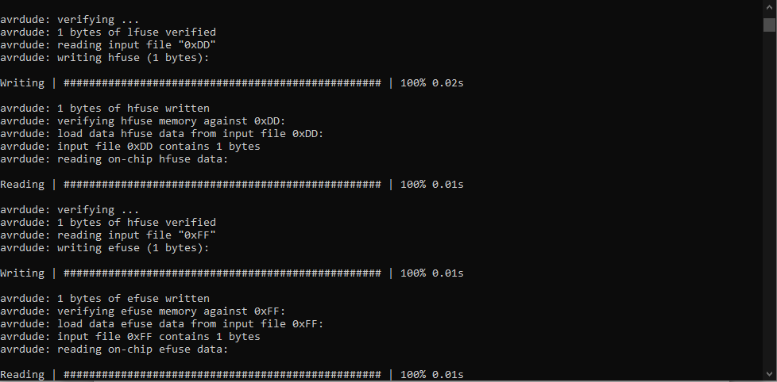
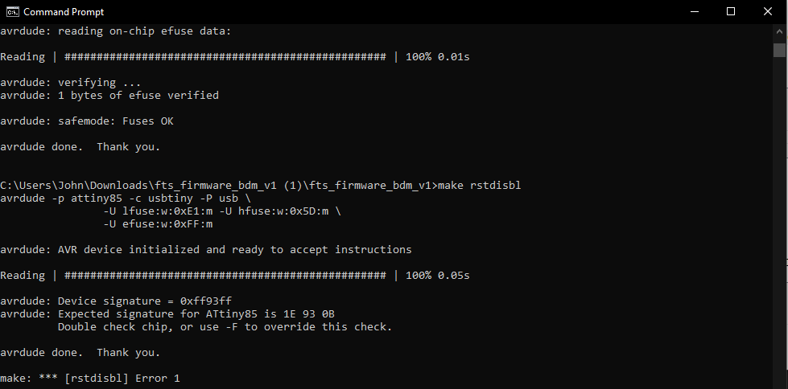
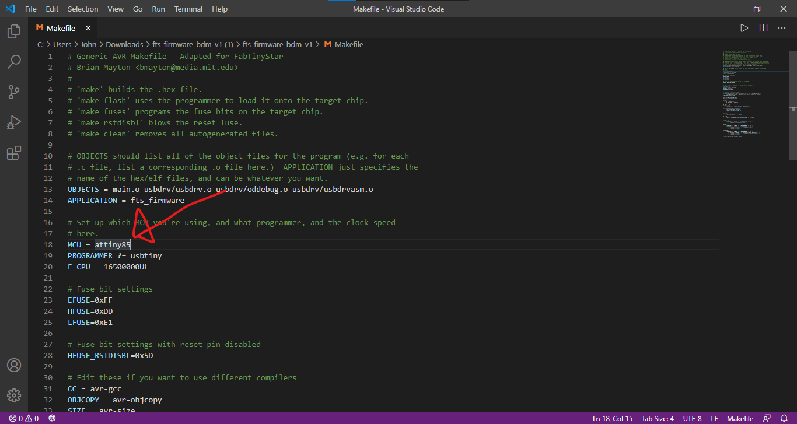

Embedded Programming
Using AVRDude
Configuring the board with avrdude allows us to configure properties such as the microcontroller's clock rate.
Since we have been issued the ATTiny85 instead of the ATTiny45, we can also use the shortcut T85.
Use the C make file program to generate the program that we want to upload to the board
Software Installation
For this part on Embedded Programming, we will need to install several software.
- Git
We first start by installing Git from https://git-scm.com/download/win .
https://sourceforge.net/projects/winavr/files/latest/download
From there, we configure the Git with the
   





I also changed the MCU to the attiny85 from the attiny45 since we have been given tiny85s instead of tiny45s.